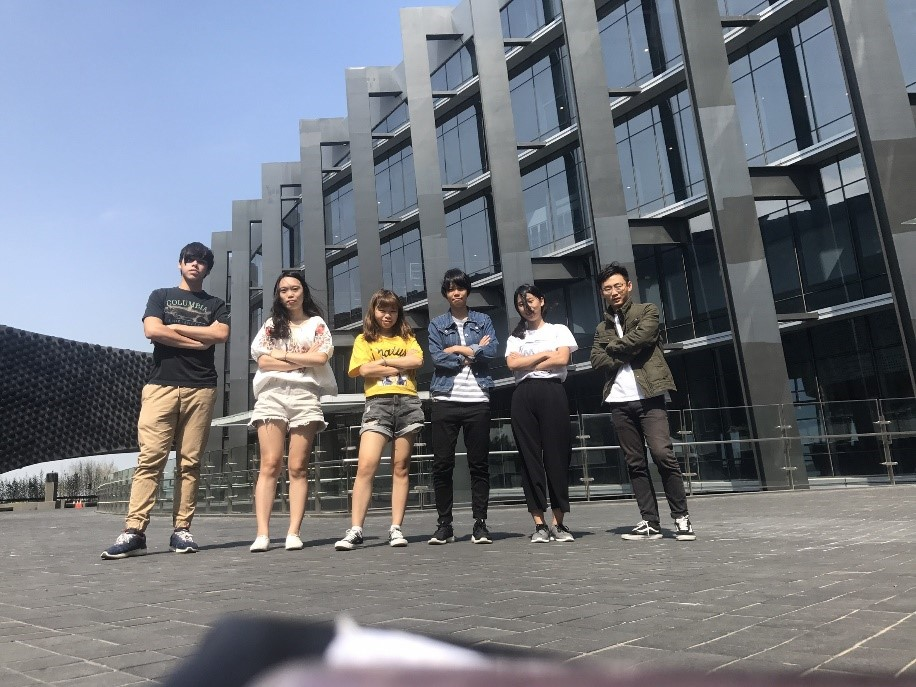
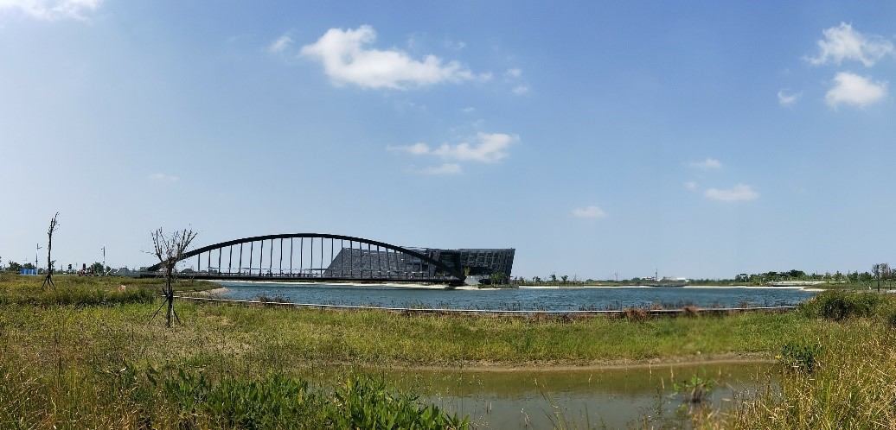
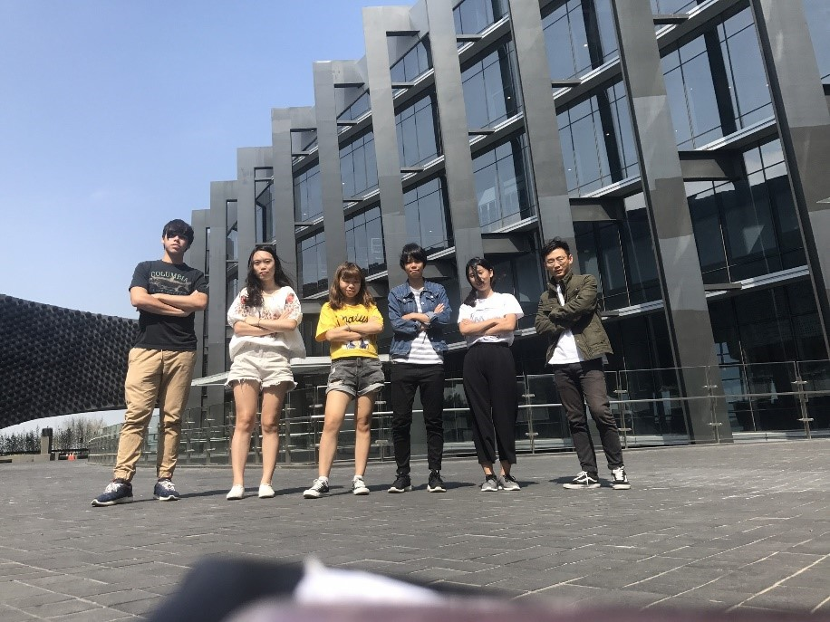

我們的體驗
博物館建築外觀很亮眼，由很多鏡面構成，拍起照來很有意境、有質感，要進入館內的旋轉門也不像一般的自動門，格外有科技感。
持學生證所以可以免費進場，很特別的是，前往展覽區的電梯是透明的，可以從透明的玻璃隨著電梯高度的增加俯瞰整個館內的環境。 這次館內總共有六個展: 錦繡繽紛—院藏亞洲織品展、尚青—高麗青瓷特展、認識亞洲—新媒體藝術展、芳茗遠播—亞洲茶文化展、揚帆萬里—日本伊萬里瓷器特展、佛陀形影—院藏亞洲佛教藝術之美。


博物館建築外觀很亮眼，由很多鏡面構成，拍起照來很有意境、有質感，要進入館內的旋轉門也不像一般的自動門，格外有科技感。
持學生證所以可以免費進場，很特別的是，前往展覽區的電梯是透明的，可以從透明的玻璃隨著電梯高度的增加俯瞰整個館內的環境。 這次館內總共有六個展: 錦繡繽紛—院藏亞洲織品展、尚青—高麗青瓷特展、認識亞洲—新媒體藝術展、芳茗遠播—亞洲茶文化展、揚帆萬里—日本伊萬里瓷器特展、佛陀形影—院藏亞洲佛教藝術之美。
當天到達故宮南院後，從停車場到院管必須走一小段路，而印入眼簾的是傳說中的至美橋，至美橋是一座跨湖景觀橋，經過橋才會到達故宮南院的本館。
早上9點至下午5點，周一休館